出血邻域细骨架漏点图册
各列从左到右为 RGB、绿通道局部对比增强、标注、原图概率、两倍图概率、等权融合概率。每幅原生裁块 64×64，目标点在裁块中央附近。蓝为血管，红为出血，黄为目标。上排漏点，下排为同图最近的稳定命中窄点（若有）。概率取三种子中位数，各档命中数单独按种子计算。
IDRiD_22_p35_1 · 28 点 · 高误报档至少一个种子命中 0 点
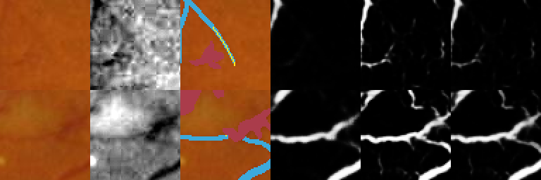
IDRiD_53_p46_1 · 24 点 · 高误报档至少一个种子命中 0 点
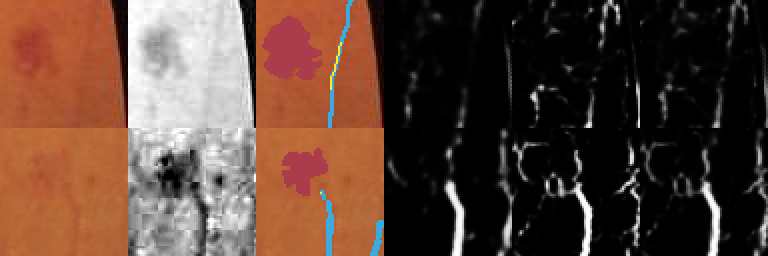
IDRiD_19_p279_1 · 19 点 · 高误报档至少一个种子命中 6 点
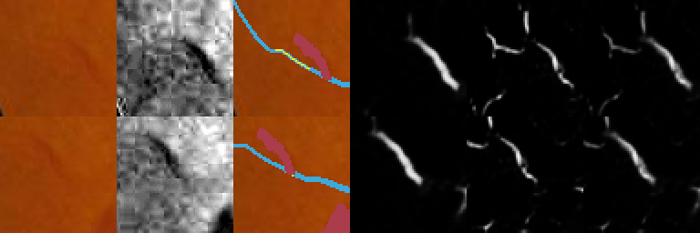
IDRiD_36_p226_1 · 18 点 · 高误报档至少一个种子命中 0 点
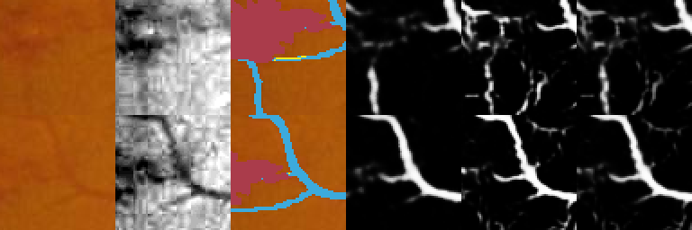
IDRiD_48_p4_1 · 17 点 · 高误报档至少一个种子命中 4 点
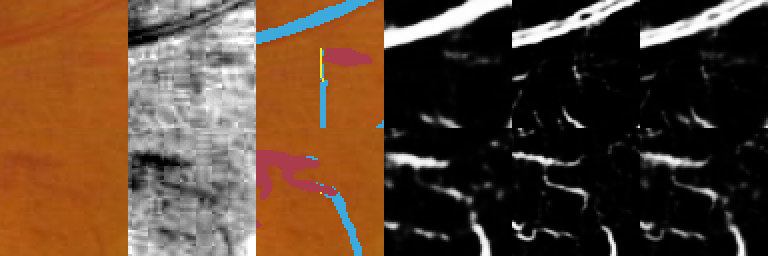
IDRiD_19_p355_1 · 17 点 · 高误报档至少一个种子命中 6 点
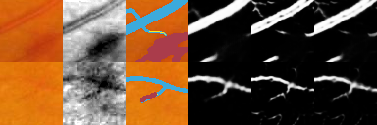
IDRiD_05_p115_1 · 14 点 · 高误报档至少一个种子命中 0 点
IDRiD_02_p122_1 · 14 点 · 高误报档至少一个种子命中 0 点
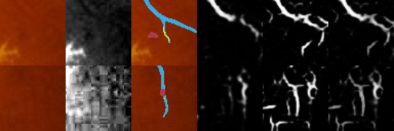
IDRiD_42_p156_1 · 14 点 · 高误报档至少一个种子命中 2 点
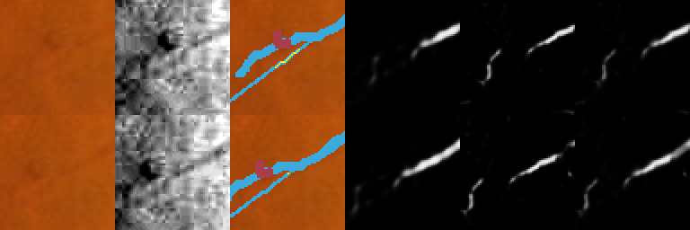
IDRiD_13_p68_1 · 13 点 · 高误报档至少一个种子命中 2 点
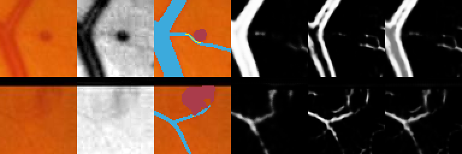
IDRiD_23_p316_1 · 13 点 · 高误报档至少一个种子命中 0 点
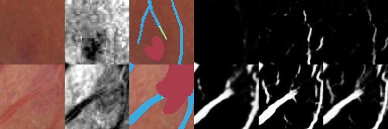
IDRiD_53_p114_1 · 13 点 · 高误报档至少一个种子命中 0 点
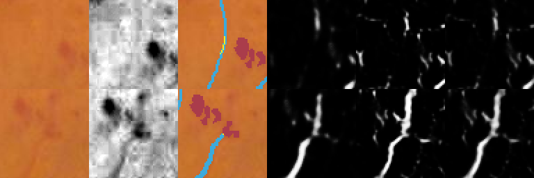
IDRiD_36_p138_1 · 13 点 · 高误报档至少一个种子命中 0 点
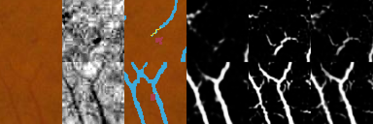
IDRiD_33_p62_1 · 12 点 · 高误报档至少一个种子命中 0 点
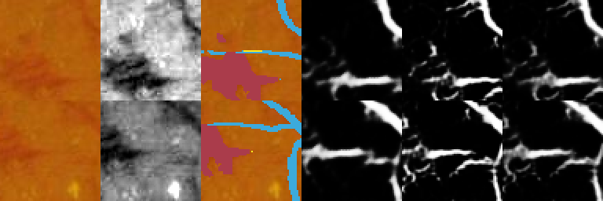
IDRiD_39_p42_1 · 12 点 · 高误报档至少一个种子命中 0 点
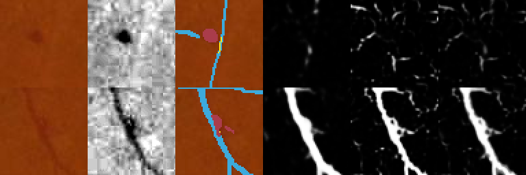
IDRiD_23_p320_1 · 11 点 · 高误报档至少一个种子命中 3 点
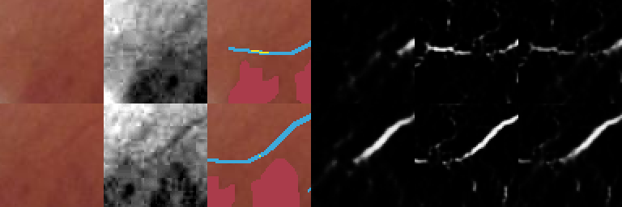
IDRiD_33_p0_2 · 11 点 · 高误报档至少一个种子命中 0 点
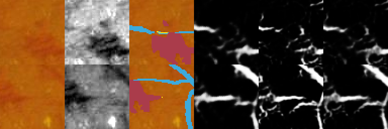
IDRiD_13_p0_2 · 10 点 · 高误报档至少一个种子命中 4 点
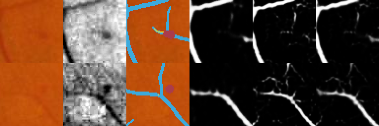
IDRiD_13_p13_1 · 10 点 · 高误报档至少一个种子命中 0 点
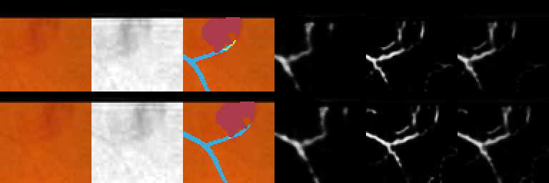
IDRiD_18_p0_4 · 10 点 · 高误报档至少一个种子命中 0 点
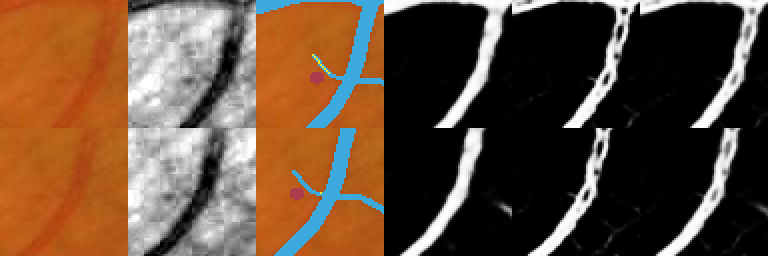
IDRiD_20_p106_1 · 10 点 · 高误报档至少一个种子命中 0 点
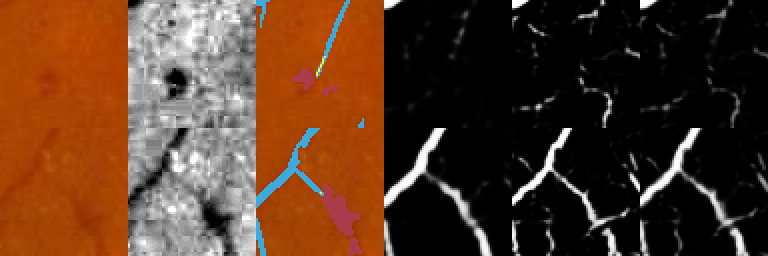
IDRiD_36_p39_1 · 10 点 · 高误报档至少一个种子命中 0 点
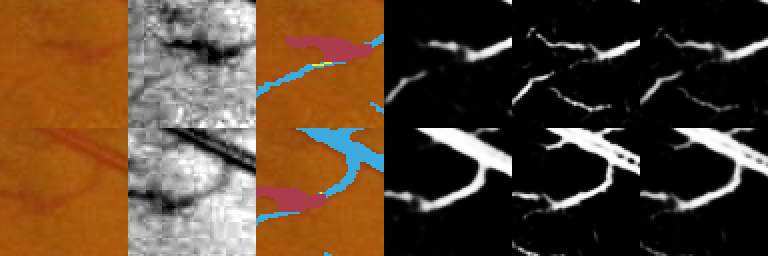
IDRiD_03_p0_1 · 9 点 · 高误报档至少一个种子命中 0 点
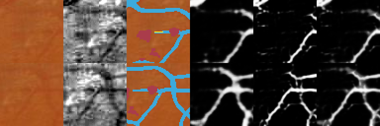
IDRiD_03_p310_1 · 9 点 · 高误报档至少一个种子命中 0 点
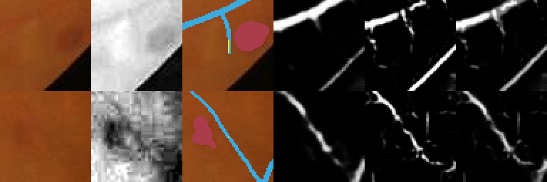
IDRiD_22_p182_1 · 9 点 · 高误报档至少一个种子命中 0 点
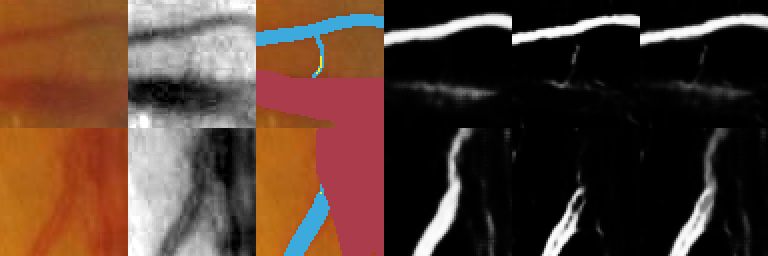
IDRiD_17_p19_1 · 9 点 · 高误报档至少一个种子命中 0 点
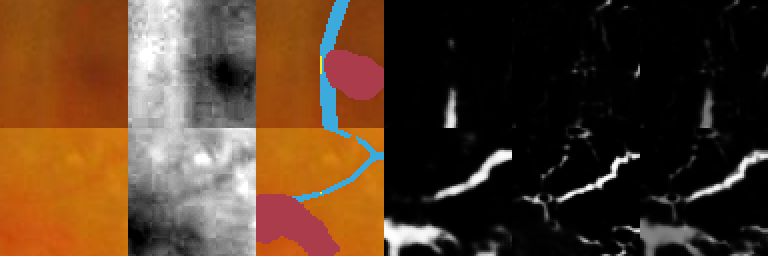
IDRiD_20_p131_1 · 9 点 · 高误报档至少一个种子命中 0 点
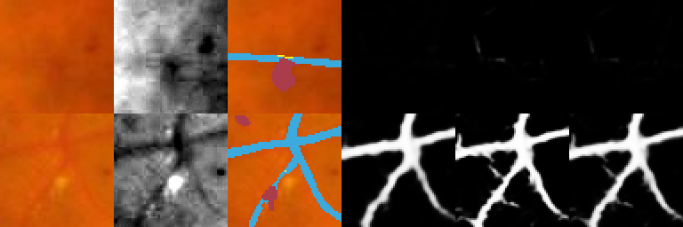
IDRiD_48_p67_1 · 8 点 · 高误报档至少一个种子命中 0 点
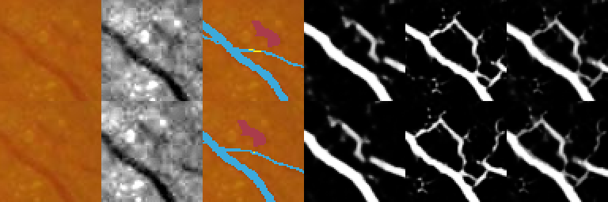
IDRiD_50_p0_1 · 8 点 · 高误报档至少一个种子命中 0 点
IDRiD_53_p68_1 · 8 点 · 高误报档至少一个种子命中 0 点
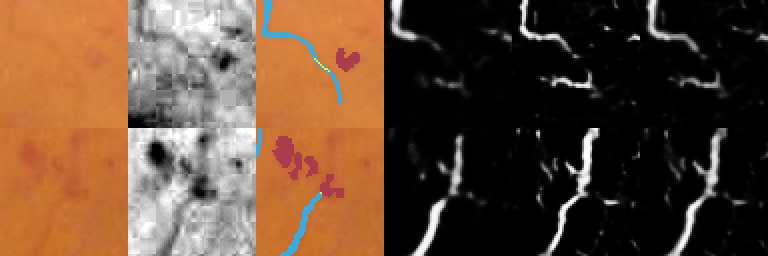
IDRiD_25_p86_1 · 8 点 · 高误报档至少一个种子命中 0 点
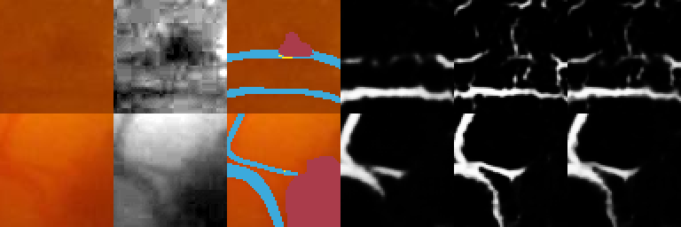
IDRiD_39_p156_2 · 8 点 · 高误报档至少一个种子命中 0 点
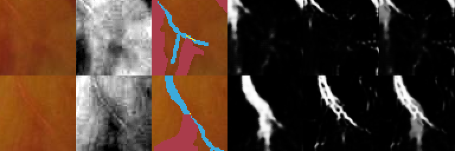
IDRiD_23_p315_1 · 7 点 · 高误报档至少一个种子命中 0 点
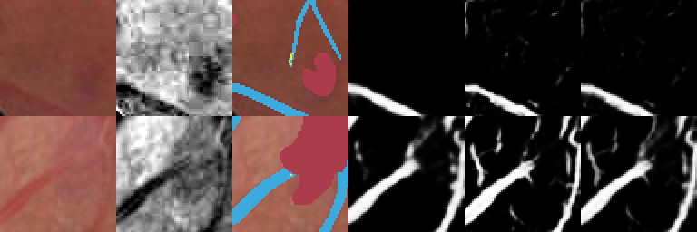
IDRiD_23_p327_1 · 7 点 · 高误报档至少一个种子命中 0 点
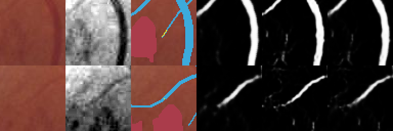
IDRiD_28_p118_1 · 7 点 · 高误报档至少一个种子命中 0 点
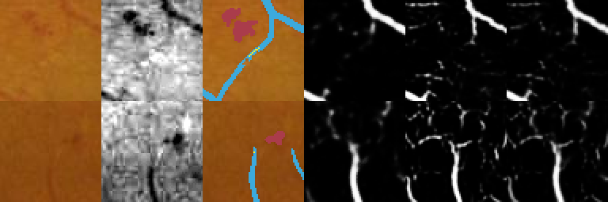
IDRiD_33_p0_3 · 7 点 · 高误报档至少一个种子命中 0 点
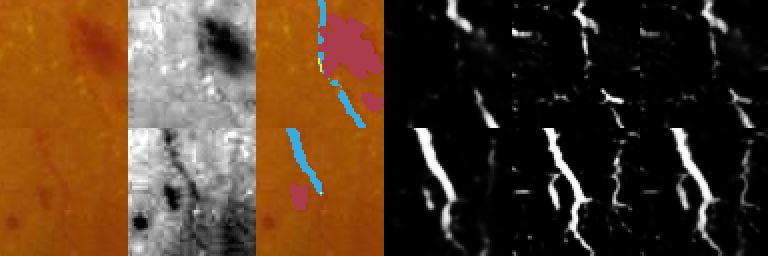
IDRiD_33_p48_1 · 7 点 · 高误报档至少一个种子命中 0 点
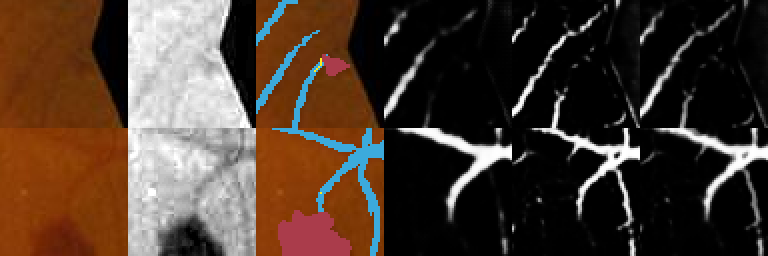
IDRiD_03_p0_4 · 7 点 · 高误报档至少一个种子命中 0 点
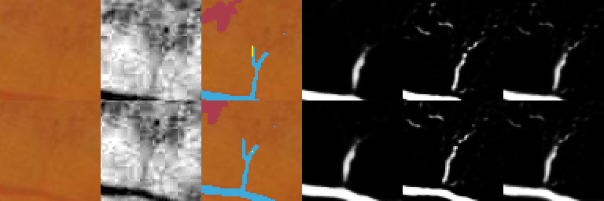
IDRiD_03_p224_1 · 7 点 · 高误报档至少一个种子命中 0 点
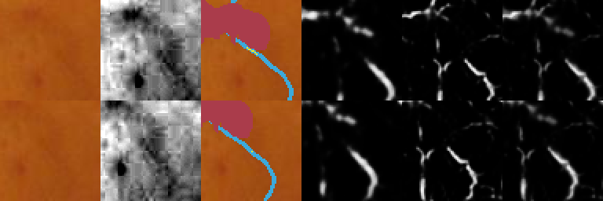
IDRiD_21_p0_1 · 7 点 · 高误报档至少一个种子命中 0 点
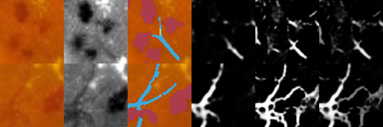
IDRiD_21_p0_2 · 7 点 · 高误报档至少一个种子命中 0 点
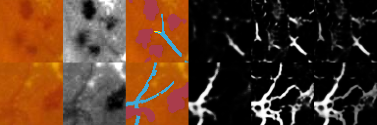
IDRiD_22_p10_2 · 7 点 · 高误报档至少一个种子命中 4 点
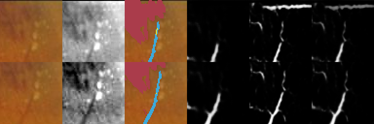
IDRiD_25_p132_3 · 7 点 · 高误报档至少一个种子命中 0 点
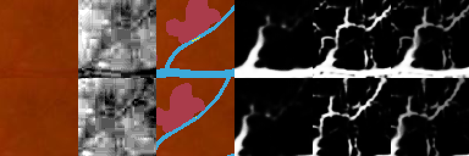
IDRiD_49_p49_2 · 7 点 · 高误报档至少一个种子命中 0 点
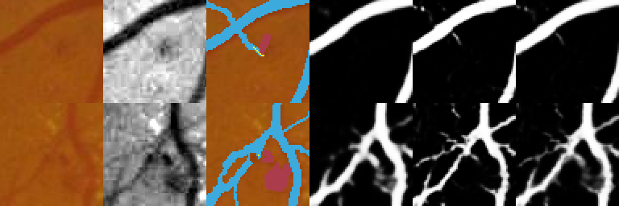
IDRiD_02_p53_1 · 7 点 · 高误报档至少一个种子命中 0 点
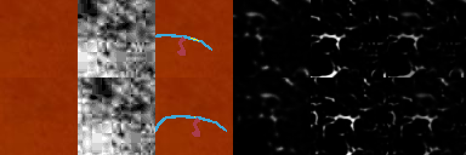
IDRiD_08_p214_1 · 6 点 · 高误报档至少一个种子命中 4 点
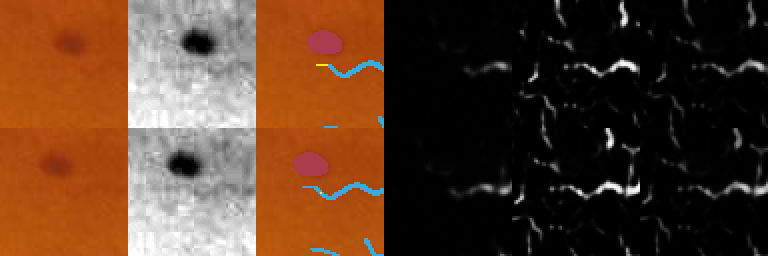
IDRiD_14_p264_1 · 6 点 · 高误报档至少一个种子命中 0 点
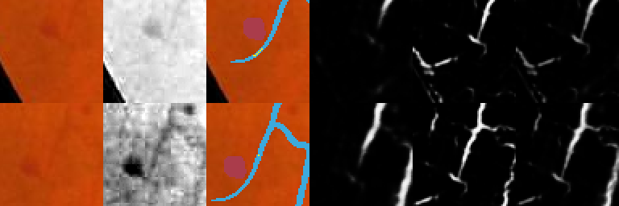
IDRiD_54_p0_1 · 6 点 · 高误报档至少一个种子命中 0 点
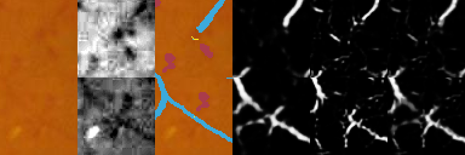
IDRiD_20_p90_1 · 6 点 · 高误报档至少一个种子命中 0 点
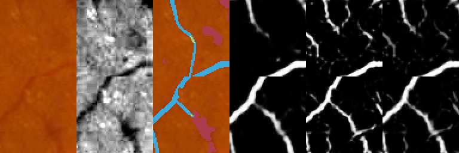
IDRiD_39_p32_1 · 6 点 · 高误报档至少一个种子命中 1 点
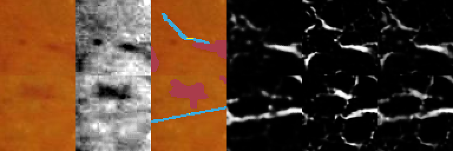
IDRiD_18_p221_1 · 5 点 · 高误报档至少一个种子命中 2 点
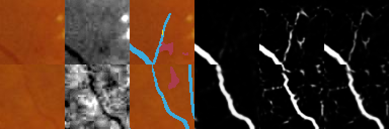
IDRiD_33_p122_1 · 5 点 · 高误报档至少一个种子命中 0 点
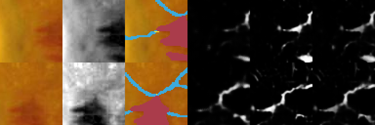
IDRiD_03_p311_1 · 5 点 · 高误报档至少一个种子命中 0 点
IDRiD_21_p37_4 · 5 点 · 高误报档至少一个种子命中 0 点
IDRiD_25_p131_5 · 5 点 · 高误报档至少一个种子命中 0 点
IDRiD_25_p147_2 · 5 点 · 高误报档至少一个种子命中 0 点
IDRiD_34_p99_1 · 5 点 · 高误报档至少一个种子命中 0 点
IDRiD_49_p163_1 · 5 点 · 高误报档至少一个种子命中 0 点
IDRiD_12_p141_1 · 5 点 · 高误报档至少一个种子命中 4 点
IDRiD_26_p62_2 · 5 点 · 高误报档至少一个种子命中 0 点
IDRiD_36_p0_1 · 5 点 · 高误报档至少一个种子命中 0 点
IDRiD_36_p232_1 · 5 点 · 高误报档至少一个种子命中 0 点
IDRiD_46_p0_1 · 5 点 · 高误报档至少一个种子命中 0 点
IDRiD_46_p123_2 · 5 点 · 高误报档至少一个种子命中 0 点
IDRiD_01_p0_1 · 4 点 · 高误报档至少一个种子命中 2 点
IDRiD_13_p68_2 · 4 点 · 高误报档至少一个种子命中 0 点
IDRiD_18_p0_2 · 4 点 · 高误报档至少一个种子命中 0 点
IDRiD_33_p64_1 · 4 点 · 高误报档至少一个种子命中 0 点
IDRiD_48_p0_1 · 4 点 · 高误报档至少一个种子命中 0 点
IDRiD_03_p87_1 · 4 点 · 高误报档至少一个种子命中 0 点
IDRiD_03_p126_1 · 4 点 · 高误报档至少一个种子命中 0 点
IDRiD_22_p10_1 · 4 点 · 高误报档至少一个种子命中 3 点
IDRiD_25_p0_1 · 4 点 · 高误报档至少一个种子命中 0 点
IDRiD_25_p127_1 · 4 点 · 高误报档至少一个种子命中 0 点
IDRiD_34_p102_1 · 4 点 · 高误报档至少一个种子命中 0 点
IDRiD_34_p156_2 · 4 点 · 高误报档至少一个种子命中 0 点
IDRiD_35_p0_1 · 4 点 · 高误报档至少一个种子命中 0 点
IDRiD_35_p0_2 · 4 点 · 高误报档至少一个种子命中 0 点
IDRiD_26_p62_1 · 4 点 · 高误报档至少一个种子命中 0 点
IDRiD_30_p46_1 · 4 点 · 高误报档至少一个种子命中 0 点
IDRiD_39_p82_1 · 4 点 · 高误报档至少一个种子命中 0 点
IDRiD_46_p118_1 · 4 点 · 高误报档至少一个种子命中 0 点
IDRiD_18_p221_2 · 3 点 · 高误报档至少一个种子命中 2 点
IDRiD_33_p48_2 · 3 点 · 高误报档至少一个种子命中 0 点
IDRiD_33_p68_1 · 3 点 · 高误报档至少一个种子命中 0 点
IDRiD_48_p0_2 · 3 点 · 高误报档至少一个种子命中 0 点
IDRiD_03_p202_1 · 3 点 · 高误报档至少一个种子命中 0 点
IDRiD_03_p249_1 · 3 点 · 高误报档至少一个种子命中 0 点
IDRiD_03_p275_2 · 3 点 · 高误报档至少一个种子命中 0 点
IDRiD_03_p294_1 · 3 点 · 高误报档至少一个种子命中 0 点
IDRiD_03_p294_2 · 3 点 · 高误报档至少一个种子命中 0 点
IDRiD_21_p240_1 · 3 点 · 高误报档至少一个种子命中 0 点
IDRiD_25_p147_1 · 3 点 · 高误报档至少一个种子命中 0 点
IDRiD_34_p99_2 · 3 点 · 高误报档至少一个种子命中 1 点
IDRiD_34_p102_3 · 3 点 · 高误报档至少一个种子命中 0 点
IDRiD_35_p71_1 · 3 点 · 高误报档至少一个种子命中 0 点
IDRiD_35_p72_1 · 3 点 · 高误报档至少一个种子命中 0 点
IDRiD_52_p130_1 · 3 点 · 高误报档至少一个种子命中 2 点
IDRiD_19_p0_2 · 3 点 · 高误报档至少一个种子命中 1 点
IDRiD_20_p0_1 · 3 点 · 高误报档至少一个种子命中 0 点
IDRiD_26_p0_1 · 3 点 · 高误报档至少一个种子命中 0 点
IDRiD_39_p0_1 · 3 点 · 高误报档至少一个种子命中 0 点
IDRiD_39_p85_1 · 3 点 · 高误报档至少一个种子命中 3 点
IDRiD_39_p99_1 · 3 点 · 高误报档至少一个种子命中 0 点
IDRiD_42_p160_1 · 3 点 · 高误报档至少一个种子命中 0 点
IDRiD_46_p123_1 · 3 点 · 高误报档至少一个种子命中 0 点
IDRiD_01_p235_1 · 2 点 · 高误报档至少一个种子命中 0 点
IDRiD_01_p235_2 · 2 点 · 高误报档至少一个种子命中 0 点
IDRiD_13_p262_1 · 2 点 · 高误报档至少一个种子命中 0 点
IDRiD_18_p221_3 · 2 点 · 高误报档至少一个种子命中 0 点
IDRiD_31_p0_1 · 2 点 · 高误报档至少一个种子命中 0 点
IDRiD_31_p59_1 · 2 点 · 高误报档至少一个种子命中 0 点
IDRiD_33_p49_2 · 2 点 · 高误报档至少一个种子命中 0 点
IDRiD_33_p115_1 · 2 点 · 高误报档至少一个种子命中 0 点
IDRiD_33_p115_2 · 2 点 · 高误报档至少一个种子命中 0 点
IDRiD_33_p222_1 · 2 点 · 高误报档至少一个种子命中 0 点
IDRiD_48_p67_2 · 2 点 · 高误报档至少一个种子命中 0 点
IDRiD_50_p0_2 · 2 点 · 高误报档至少一个种子命中 0 点
IDRiD_03_p0_2 · 2 点 · 高误报档至少一个种子命中 0 点
IDRiD_03_p275_1 · 2 点 · 高误报档至少一个种子命中 0 点
IDRiD_04_p233_1 · 2 点 · 高误报档至少一个种子命中 0 点
IDRiD_11_p59_1 · 2 点 · 高误报档至少一个种子命中 1 点
IDRiD_21_p37_1 · 2 点 · 高误报档至少一个种子命中 0 点
IDRiD_21_p37_2 · 2 点 · 高误报档至少一个种子命中 0 点
IDRiD_21_p37_3 · 2 点 · 高误报档至少一个种子命中 2 点
IDRiD_21_p94_1 · 2 点 · 高误报档至少一个种子命中 0 点
IDRiD_22_p14_1 · 2 点 · 高误报档至少一个种子命中 0 点
IDRiD_25_p0_2 · 2 点 · 高误报档至少一个种子命中 0 点
IDRiD_25_p131_2 · 2 点 · 高误报档至少一个种子命中 0 点
IDRiD_25_p131_4 · 2 点 · 高误报档至少一个种子命中 0 点
IDRiD_34_p0_1 · 2 点 · 高误报档至少一个种子命中 0 点
IDRiD_34_p0_2 · 2 点 · 高误报档至少一个种子命中 0 点
IDRiD_34_p6_1 · 2 点 · 高误报档至少一个种子命中 0 点
IDRiD_35_p0_4 · 2 点 · 高误报档至少一个种子命中 0 点
IDRiD_35_p0_5 · 2 点 · 高误报档至少一个种子命中 0 点
IDRiD_35_p53_1 · 2 点 · 高误报档至少一个种子命中 0 点
IDRiD_15_p0_2 · 2 点 · 高误报档至少一个种子命中 0 点
IDRiD_19_p0_1 · 2 点 · 高误报档至少一个种子命中 0 点
IDRiD_19_p0_3 · 2 点 · 高误报档至少一个种子命中 0 点
IDRiD_32_p0_1 · 2 点 · 高误报档至少一个种子命中 0 点
IDRiD_36_p0_2 · 2 点 · 高误报档至少一个种子命中 0 点
IDRiD_36_p160_1 · 2 点 · 高误报档至少一个种子命中 0 点
IDRiD_39_p37_1 · 2 点 · 高误报档至少一个种子命中 0 点
IDRiD_42_p0_1 · 2 点 · 高误报档至少一个种子命中 0 点
IDRiD_46_p0_4 · 2 点 · 高误报档至少一个种子命中 0 点
IDRiD_13_p0_1 · 1 点 · 高误报档至少一个种子命中 0 点
IDRiD_13_p243_1 · 1 点 · 高误报档至少一个种子命中 0 点
IDRiD_18_p0_1 · 1 点 · 高误报档至少一个种子命中 0 点
IDRiD_18_p0_3 · 1 点 · 高误报档至少一个种子命中 0 点
IDRiD_18_p60_1 · 1 点 · 高误报档至少一个种子命中 0 点
IDRiD_18_p221_4 · 1 点 · 高误报档至少一个种子命中 0 点
IDRiD_28_p118_2 · 1 点 · 高误报档至少一个种子命中 0 点
IDRiD_31_p85_1 · 1 点 · 高误报档至少一个种子命中 0 点
IDRiD_31_p179_1 · 1 点 · 高误报档至少一个种子命中 0 点
IDRiD_33_p0_1 · 1 点 · 高误报档至少一个种子命中 0 点
IDRiD_33_p0_4 · 1 点 · 高误报档至少一个种子命中 0 点
IDRiD_33_p0_5 · 1 点 · 高误报档至少一个种子命中 0 点
IDRiD_33_p0_6 · 1 点 · 高误报档至少一个种子命中 0 点
IDRiD_33_p0_7 · 1 点 · 高误报档至少一个种子命中 0 点
IDRiD_33_p0_8 · 1 点 · 高误报档至少一个种子命中 0 点
IDRiD_33_p0_9 · 1 点 · 高误报档至少一个种子命中 0 点
IDRiD_33_p49_1 · 1 点 · 高误报档至少一个种子命中 0 点
IDRiD_33_p86_1 · 1 点 · 高误报档至少一个种子命中 0 点
IDRiD_33_p122_2 · 1 点 · 高误报档至少一个种子命中 0 点
IDRiD_33_p127_1 · 1 点 · 高误报档至少一个种子命中 0 点
IDRiD_33_p155_1 · 1 点 · 高误报档至少一个种子命中 0 点
IDRiD_33_p222_2 · 1 点 · 高误报档至少一个种子命中 0 点
IDRiD_48_p146_1 · 1 点 · 高误报档至少一个种子命中 0 点
IDRiD_48_p161_1 · 1 点 · 高误报档至少一个种子命中 0 点
IDRiD_50_p0_3 · 1 点 · 高误报档至少一个种子命中 0 点
IDRiD_50_p0_4 · 1 点 · 高误报档至少一个种子命中 0 点
IDRiD_03_p0_3 · 1 点 · 高误报档至少一个种子命中 0 点
IDRiD_03_p0_5 · 1 点 · 高误报档至少一个种子命中 0 点
IDRiD_03_p54_1 · 1 点 · 高误报档至少一个种子命中 0 点
IDRiD_03_p54_2 · 1 点 · 高误报档至少一个种子命中 0 点
IDRiD_03_p54_3 · 1 点 · 高误报档至少一个种子命中 0 点
IDRiD_05_p115_2 · 1 点 · 高误报档至少一个种子命中 0 点
IDRiD_10_p44_1 · 1 点 · 高误报档至少一个种子命中 0 点
IDRiD_11_p0_1 · 1 点 · 高误报档至少一个种子命中 0 点
IDRiD_11_p50_1 · 1 点 · 高误报档至少一个种子命中 0 点
IDRiD_11_p50_2 · 1 点 · 高误报档至少一个种子命中 0 点
IDRiD_21_p37_5 · 1 点 · 高误报档至少一个种子命中 0 点
IDRiD_21_p94_2 · 1 点 · 高误报档至少一个种子命中 0 点
IDRiD_21_p261_1 · 1 点 · 高误报档至少一个种子命中 0 点
IDRiD_22_p37_1 · 1 点 · 高误报档至少一个种子命中 1 点
IDRiD_25_p131_1 · 1 点 · 高误报档至少一个种子命中 0 点
IDRiD_25_p131_3 · 1 点 · 高误报档至少一个种子命中 0 点
IDRiD_25_p132_1 · 1 点 · 高误报档至少一个种子命中 0 点
IDRiD_25_p132_2 · 1 点 · 高误报档至少一个种子命中 0 点
IDRiD_25_p132_4 · 1 点 · 高误报档至少一个种子命中 0 点
IDRiD_34_p0_3 · 1 点 · 高误报档至少一个种子命中 0 点
IDRiD_34_p6_2 · 1 点 · 高误报档至少一个种子命中 0 点
IDRiD_34_p102_2 · 1 点 · 高误报档至少一个种子命中 0 点
IDRiD_34_p135_1 · 1 点 · 高误报档至少一个种子命中 0 点
IDRiD_34_p156_1 · 1 点 · 高误报档至少一个种子命中 0 点
IDRiD_35_p0_3 · 1 点 · 高误报档至少一个种子命中 0 点
IDRiD_35_p53_2 · 1 点 · 高误报档至少一个种子命中 0 点
IDRiD_49_p0_1 · 1 点 · 高误报档至少一个种子命中 0 点
IDRiD_49_p49_1 · 1 点 · 高误报档至少一个种子命中 0 点
IDRiD_49_p78_1 · 1 点 · 高误报档至少一个种子命中 0 点
IDRiD_54_p84_1 · 1 点 · 高误报档至少一个种子命中 1 点
IDRiD_15_p0_1 · 1 点 · 高误报档至少一个种子命中 0 点
IDRiD_16_p14_1 · 1 点 · 高误报档至少一个种子命中 0 点
IDRiD_17_p74_1 · 1 点 · 高误报档至少一个种子命中 0 点
IDRiD_19_p70_1 · 1 点 · 高误报档至少一个种子命中 0 点
IDRiD_26_p67_1 · 1 点 · 高误报档至少一个种子命中 0 点
IDRiD_26_p98_1 · 1 点 · 高误报档至少一个种子命中 0 点
IDRiD_26_p98_2 · 1 点 · 高误报档至少一个种子命中 0 点
IDRiD_26_p98_3 · 1 点 · 高误报档至少一个种子命中 0 点
IDRiD_26_p138_1 · 1 点 · 高误报档至少一个种子命中 1 点
IDRiD_32_p85_1 · 1 点 · 高误报档至少一个种子命中 0 点
IDRiD_32_p189_1 · 1 点 · 高误报档至少一个种子命中 0 点
IDRiD_32_p189_2 · 1 点 · 高误报档至少一个种子命中 0 点
IDRiD_36_p39_2 · 1 点 · 高误报档至少一个种子命中 0 点
IDRiD_36_p173_1 · 1 点 · 高误报档至少一个种子命中 1 点
IDRiD_39_p37_2 · 1 点 · 高误报档至少一个种子命中 1 点
IDRiD_39_p54_1 · 1 点 · 高误报档至少一个种子命中 0 点
IDRiD_39_p146_1 · 1 点 · 高误报档至少一个种子命中 0 点
IDRiD_39_p146_2 · 1 点 · 高误报档至少一个种子命中 0 点
IDRiD_39_p146_3 · 1 点 · 高误报档至少一个种子命中 0 点
IDRiD_39_p156_1 · 1 点 · 高误报档至少一个种子命中 0 点
IDRiD_39_p156_3 · 1 点 · 高误报档至少一个种子命中 0 点
IDRiD_39_p156_4 · 1 点 · 高误报档至少一个种子命中 0 点
IDRiD_39_p157_1 · 1 点 · 高误报档至少一个种子命中 0 点
IDRiD_39_p160_1 · 1 点 · 高误报档至少一个种子命中 0 点
IDRiD_40_p12_1 · 1 点 · 高误报档至少一个种子命中 0 点
IDRiD_46_p0_2 · 1 点 · 高误报档至少一个种子命中 1 点
IDRiD_46_p0_3 · 1 点 · 高误报档至少一个种子命中 1 点
IDRiD_46_p89_1 · 1 点 · 高误报档至少一个种子命中 0 点
IDRiD_46_p92_1 · 1 点 · 高误报档至少一个种子命中 0 点
IDRiD_46_p123_3 · 1 点 · 高误报档至少一个种子命中 1 点